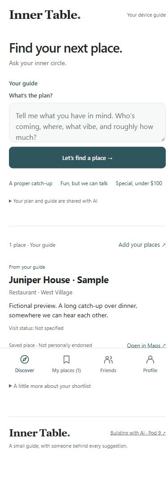
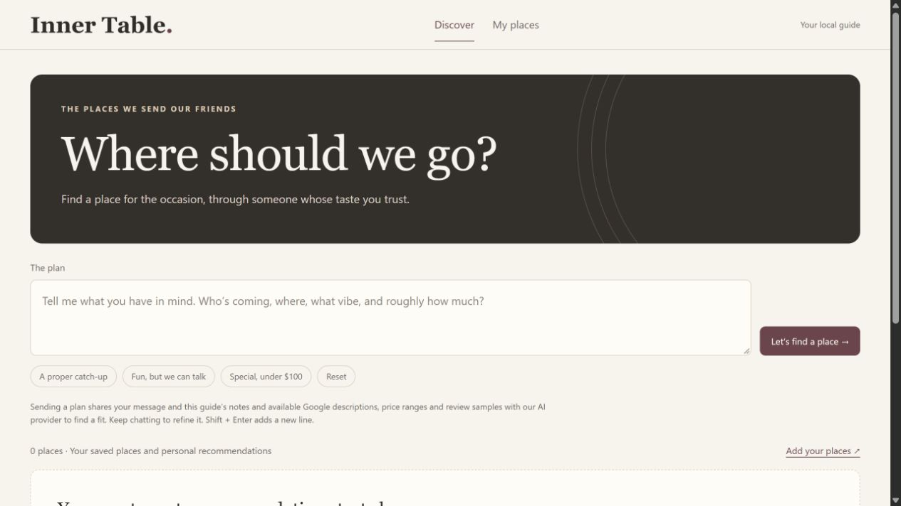
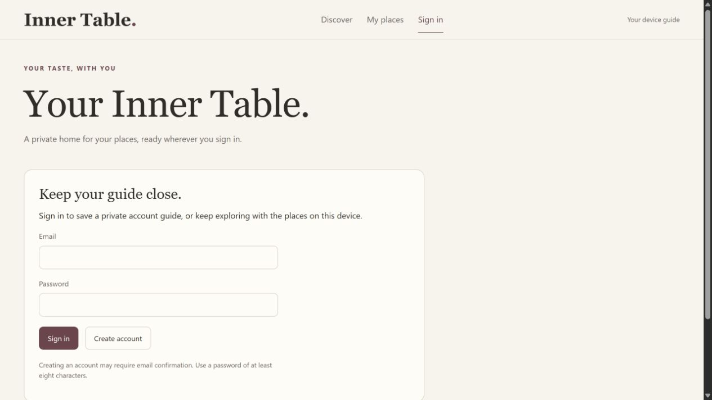
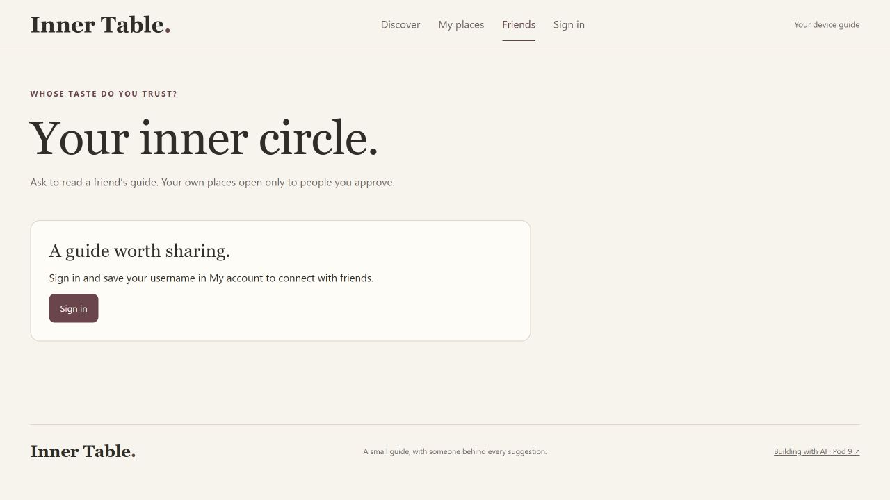

Inner Table.
Inner Table. helps friends find a place for their occasion from recommendations by people they trust. Starting in NYC.
Product Showcase (Prototype / Live App / 2-Min Video)
Build 2 · Reviewed November 16, 2026. Describe a plan in chat, search saved places with Google details and AI explanations, and choose a private account guide or an approved friend's guide.
Open the Inner Table. prototype
GitHub Pages opens the static interface and browser-stored guide. To use AI planning, Google lookups, shared-list import and accounts, run python server.py --port 8001 from the repository folder and open http://127.0.0.1:8001/prototype/ on that computer. The optional services need the builder's local configuration. Public backend hosting is pending.


Living PRD (Product Requirements Document)
1. Target User & The Job to Be Done
Who is this for? A friend planning an outing in NYC who wants recommendations from someone whose taste they trust. Dinner is the starting point. Bars, coffee shops and other saved places can be included too.
The painful "Before" workflow: A friend texts me asking where to go for dinner. I ask about their budget, neighborhood, and the kind of night they have in mind. Then I scroll through my Google Maps pins and send a few places with a note on why I would pick each one. My friend has to wait for me to reply before they can decide.
The "After" workflow with this product: A friend chooses their own guide or a friend's approved guide, then describes the occasion, location and budget in chat. Follow-up messages refine the plan. Results use places in the selected guide and show the owner's notes, optional visit status, saved-list provenance and available Google details. Notes and review-derived hints help explain a fit. Imported places appear immediately, and I can edit their details or hide them anytime.
2. Scope & Explicit Non-Goals
- In Scope (Core Workflow) Add Maps links, import a Takeout Saved-list CSV, or import a list shared for signed-out viewing. Confirm one bulk preview and explore the places immediately. All categories and uncategorized pins are eligible. Optional Google Places lookups provide available categories, photos, descriptions, price ranges and a limited review sample. Chat uses OpenRouter to interpret the plan and rank supplied guide places. Inferred tags stay labeled. Inclusion, personal endorsement and visit status have separate controls.
- Private guides Device imports stay in browser storage until I explicitly copy them to my account. Accounts support profiles and private account guides. A friend requests access by exact username, and the guide owner approves or removes access. Approved friends can search visible places. Hidden entries are excluded. A two-account interface rehearsal is still pending.
- Out of Scope #1 Automatic access to private Google Maps saves and continuous sync. Google sign-in authenticates an Inner Table. account. The future Connect Google import needs a separate supported authorization flow and eligibility review. CSV and shared-list links provide the current import paths. Google's saved-data schema and account eligibility guidance describe a possible future route. Google saved-data documentation · Google account eligibility guidance
- Out of Scope #2 Verified live prices, opening hours, reservations and booking availability. Google content and AI suggestions can be incomplete, and important requirements need confirmation with the venue.
- Out of Scope #3 Public backend hosting, multi-city discovery and specialized booking, shopping or nightlife integrations. NYC remains the pilot scope.
3. How It Works Under the Hood & Riskiest Assumption (Week 2+)
Riskiest Assumption Messy saved pins, personal notes and a small review sample contain enough context to answer a friend's real plan. An imported save alone does not establish a personal recommendation or visit.
Planned test Ask friends to describe an outing they are actually planning, try a trusted guide and identify a place they would consider. Record whether the shortlist fits, which explanation helped, and how much cleanup was needed. Review empty results and follow-up changes. This test is pending.
Simple Architecture The HTML/CSS/JavaScript interface stores device guides locally. Explicit account copying sends a guide through the local Python server to Supabase, where raw guide rows are owner-only. Approved followers read visible places through a permission-checked database function. Each friend-guide AI request rechecks access. For a plan, the server retrieves candidates, fetches available Google evidence and asks OpenRouter to rank supplied guide IDs. The browser renders explanations and available photos. Google content stays session-only. Provider keys stay in the local environment.
4. Unit Economics & Analytics Snapshot (Updated Weekly)
For November 9 through November 16 at 9:33 a.m. New York time, PostHog recorded 31 prototype pageviews, 18 fixed-control clicks, 92 view-open events and 9 form submissions. Seven local session recordings were available. All observed activity came from local testing. Published-page ingestion and replay visual review are pending. The analytics loader and deployment workflow are prepared for review.
For the same reporting window, the private runtime ledger contains 106 Google Maps requests (43 searches, 33 details requests and 30 photos) and 51 OpenRouter requests. Available responses report 235,476 tokens, with one request missing complete usage data. On November 16, OpenRouter's usage endpoint reported $0.0315225 in cumulative usage for the configured app key, matching the recorded cost subtotal. Google Cloud's linked billing account displayed $0.00 cost for November 1–16. Google warns that costs can arrive more than 24 hours late. Weekly project allocation and final billing reconciliation remain pending. Cost per completed plan still needs measurement. Exact project-level coding-agent tokens are unavailable.
Open Inner Table. insights in PostHog (project access required).

Weekly Build Log
Build 1 · Intent.md & Throwaway Prototype (Due Nov 9)
- What shipped: Build 1 checkpoint approved for repository push: redesigned Discover and My places, personal Maps-link entry, CSV import with duplicate/skipped-row counts and automatic guide inclusion, editable visit/endorsement status and details, inferred tag labels, hide/show and Show all in guide, browser persistence, backups, and occasion/neighborhood/budget filtering. All 21 unit tests and browser workflow checks passed. Connect Google remains a future entry point. No hosted-site deployment or real-user testing; real export validation pending; checkpoint screenshot preserved below.
- Things learned with AI: I got more comfortable reading basic terminal commands like pwd, ls, and cd, and understanding the difference between Git locally and GitHub online. I learned that committing records a snapshot of my work, while pushing sends those commits to GitHub. I also learned that AI building my idea is only the start: I still needed to review and edit a lot, and I kept finding bugs.
- What broke / changed in PRD: Narrowed the first version from a private social platform to one person's local NYC place guide. Imported places appear without mandatory review; all categories are eligible and visit status, notes, and neighborhood are optional. Keep saved-list suggestions separate from personal endorsements. Next priorities: Google review-derived keywords, automatic Google Maps categories, and real place photos. These are not implemented yet; starred-place JSON/GeoJSON import and multi-city discovery also remain planned.
- Cost & time this week: $4.62 estimated subscription allocation; $0 runtime API cost · approximately 5 hours estimated from activity timestamps.

Build 2 · Smallest Local Version & PostHog (Due Nov 16)
- What shipped A plan chat supports follow-up requests using Google details, available photos, price ranges and a limited review sample with OpenRouter ranking. Location, budget and occasion come through the conversation. Shared Maps lists can be imported alongside CSV files. Accounts support explicit device-guide copying, private profiles, approved followers, hidden-place filtering and revoked access. Phone navigation and compact place rows were added. Google, AI and account workflows require the local Python server.
- Things learned with AI I learned why the product needs Google Cloud setup to fetch categories, photos and reviews. I set that up as the builder so users can work through the app. Public place details and private Maps saves need separate connections. I also learned that local analytics working does not prove the published product page is recording visits, so I need to check both.
- What broke / changed in PRD Fixed empty-candidate messages, Maps name mismatches and a Korean substitution in Japanese results. PRD v2 now includes conversational planning, account migration and approved access to friend guides. The November 16 link audit passed existing published links, anchors and prototype assets. It found that the analytics loader and generated configuration had not been deployed. A PostHog insight screenshot is now included above. Publishing and verifying public events and testing the two-account interface remain pending.
- Checks on November 16 All 39 JavaScript and 31 Python tests passed. PostHog's saved interaction funnel now uses the app's fixed-control click event. The report demo button has its own fixed analytics label, and both pages display a recording notice. Review and public deployment are pending.
- Cost & time this week Reviewed November 16. OpenRouter reports $0.0315225 cumulative usage for the configured app key. Google Cloud displays $0.00 for November 1–16, subject to delayed usage. Weekly project allocation, final billing reconciliation, PostHog/Mobbin charges and reconciled weekly hours remain pending. API request metadata and available provider usage are recorded privately. Estimated pre-tax ChatGPT Plus allocation is $4.62 using $20 × 12 ÷ 52. Observed work intervals are recorded in the build journal, with unobserved gaps excluded.






Build 3 · Build.exe: The Core Workflow (Due Nov 23)
- What shipped: [End-to-end workflow working with real inputs + PostHog funnel events]
- What broke / changed in PRD: [Fill in]
- Cost & time this week: Spend and hours not yet recorded
Build 4 · Test.py: Choose Track A or Track B (Due Nov 30)
- Chosen track: [A: 10-case domain eval and one outside target-user review; OR B: 3–5 outside users and replay findings]
- Results and improvements: [Before/after evidence; for Track B, fixes to the top three friction points]
- PRD v4 changes: [What the evidence changed]
- Cost & time this week: Spend and hours not yet recorded
Build 5 · Ship.installer: Launch Ops, Rollback Check & 2-Min Video (Due Dec 7)
- Launch Ops & Safety: [Verified no exposed keys, set spend cap, tested 2-minute rollback]
- 2-Minute Video & Final Polish: [Link/embed above]
- Cost & time this week: Spend and hours not yet recorded